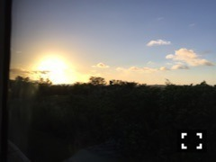
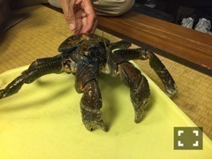
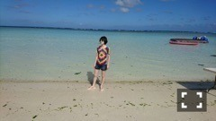
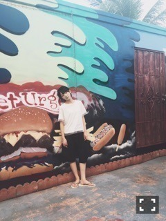

| 2016/03 14 Mon | 乃木坂グアム解禁ヽ (・∀・)ノ |

グアムのホテルはさゆまっちょと一緒だったよ〜ヽ(・∀・)ノ
上の写真はホテルの部屋からの夕景

風が強すぎて、ベランダに洗って干したUVカットのパーカーが飛んでどこかに行きました。
もしグアムに行く機会があって、もし見つけた方ご一報ください。
黒のUVパーカーです。

日本食レストランの店員さんが見せてくれたヤシガニちゃん

うーむ
すごくバカンス野郎って感じ！

まりかに撮ってもらったヽ(・∀・)ノ
他にもまりカメラマンにいろいろ撮ってもらったよ(^-^)
いつかまりカメラマンと仲間たちで作品出したいね(^-^)
あと、
最近いろいろお騒がせしてしまってすみません(´；ω；｀)
私は変わらず元気ですヽ(・∀・)ノ
これからもいっぱい笑顔でお仕事頑張ります！
へばなっ☆彡
コメント(859)
2016/03/14 11:38